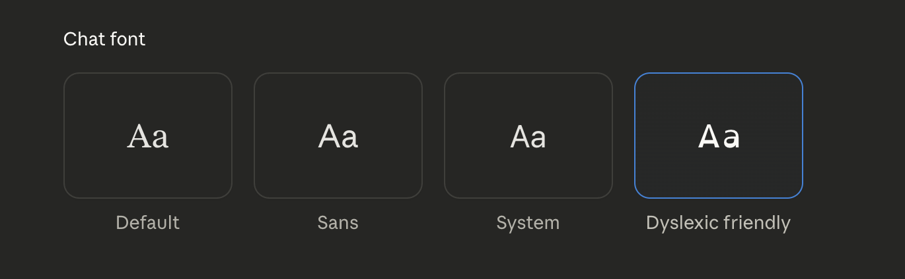

I’ve been using LLMs for a few years now. I wasn’t quite sure what to do with chatGPT when it first launched, but was awe-stricken. I knew about the different models from working at Google, but like many others, didn’t see the obvious user value.
“Give it to the users and they will come.” It’s a brilliant way to figure out how a new technology can serve others (and be marketed, packaged up, and sold to the highest bidder).
It’s also a bit reckless. To send something so powerful out there, without knowing the consequence. I think we’ve gotten pretty lucky so far. But “so far” is also not something to hang your hat on.
This is what brings me to my first move of the year, I’m cancelling my chatGPT subscription and getting cozy with Claude. I think Claude and Gemini will make the perfect pair. Responsible, polite, acutely funny, multi-modal (loving the graphics from nano banana!) and I could use a thought partner for this site, a couple to be precise.
What draws me to Claude:
- Anthropic has proven again and again to care about humans.
- Dario Amodei is CEO and while I don’t agree with everything he writes, I appreciate how thoughtful he is and that he will make bold predictions and warnings. To put everything in writing means he’s willing to be publically wrong.
- I’ve heard positive things from engineers at Google who use Claude, alongside Gemini.
- OpenAI continues to feel ultra-competitive, which gives me the ick.
- LLMs and AI technology are not just “business” to me, it has the power to transform so much of what we do, and I’d prefer most of that stays in the labs til we know more.
It’s a new year, and I’m starting to publish, so I’m getting my team in place. I’m excited to add Claude to my crew of two.
Let’s take it for a spin.
Incredible! when I subscribe, i’m immediately taken to a Billing section, where I can easily cancel my plan. The settings are all super clear and the menu is easy to follow.
When I hop to the top, General, It let’s me set some preferences, I add: germanic root over latin, preferred; humor over niceties.
Wow! dyslexic friendly? This is awesome.
The Account tab makes it super easy to delete your account. This is like a dream. I can never figure this stuff out, ahem, chatGPT, where do I delete my account?
Privacy allow me to easily export my data! Noted, in case i ever want to delete my account I’d do this first. I do appreciate when it can bring this in and I don’t have to repeat myself.
“Manage Memory” jumps me to Capabilities. Ooooh, here is where i get to choose if it remembers past chats. This will be great for bringing in more context.
Then, there’s a section to add skills–custom traits, e.g. "our philosophy" and "brand styleguides", for Claude to apply to my work before publishing.[1]
Connections is where I can link GitHub and other accounts. I’ll keep this limited for now, but I bet being able to pull files directly from Google Drive could be really useful. Here I can also add a remote MCP server. This is something I’d like to figure out this year. Stay tuned for that post.
And Claude Code, cool! this is similar to Gemini CLI. The perfect coding buddy. Maybe I’ll get to this in 2026, too.
Everything is so clean and usable. Brilliant UX content design. I am loving Claude already.
P.S. When I asked Gemini about this partnership, it gave a fantastic response, including If Claude handles the philosophy and the "human" side (Anthropic’s strong suit ), I can handle the heavy lifting, data processing, and integration with your Google ecosystem.
- and … i can steal like an artist. ↩